ЛР1. Задание — Работа с сокетами
Цель работы
Понять принципы межсокетного взаимодейсвтия в вебе. Научиться реализовывать базовую архитектуру клиент-сервер.
Практическое задание 1. Обмен сообщениями по UDP
UDP — протокол без установления соединения: отправитель просто посылает датаграмму, не дожидаясь подтверждения от получателя. Это быстрее TCP, но не гарантирует ни доставку, ни порядок пакетов. Для простого обмена сообщениями этого достаточно — в Python работа с UDP через socket.SOCK_DGRAM сводится к паре вызовов sendto() и recvfrom() без предварительного подключения.
Задание
Реализовать клиентскую и серверную часть приложения. Клиент отправляет серверу сообщение «Hello, server», и оно должно отобразиться на стороне сервера. В ответ сервер отправляет клиенту сообщение «Hello, client», которое должно отобразиться у клиента.
Требования:
- Обязательно использовать библиотеку socket.
- Реализовать с помощью протокола UDP.
Реализация
Для реализации была использована библиотека socket.
Сокет - программный интерфейс для обеспечения информационного обмена между процессами.
Существуют клиентские и серверные сокеты. Серверный сокет прослушивает определенный порт, а клиентский подключается к серверу. После того, как было установлено соединение начинается обмен данными.
Код сервера
Код
import socket
# создаем сокет
server_sock = socket.socket(socket.AF_INET, socket.SOCK_DGRAM)
# привязываем сокет к адресу и порту
server_sock.bind(('localhost', 8080))
print('Сервер запущен')
# принимаем сообщение от клиента
data, addr = server_sock.recvfrom(1024)
print(f"Сообщение от клиента:\n {data.decode('utf-8')}")
server_sock.sendto(b'Hello, client', addr)
server_sock.close()
Код клиента
Код
import socket
client_sock = socket.socket(socket.AF_INET, socket.SOCK_DGRAM)
# отправляем сообщение sendto(bytes, address)
client_sock.sendto(b'Hello, server', ('localhost', 8080))
# получаем ответ от сервера
data, addr = client_sock.recvfrom(1024)
print(f"Сообщение от сервера\n {data.decode('utf-8')}")
client_sock.close()
Что происходит?
- Запускается сервер
- Сервер создает UDP-сокет
- Сервер привязывает сокет к localhost:8080
- Сервер начинает ожидать сообщение
- Запускается клиент.
- Клиент создает UDP-сокет
- Клиент отправляет серверу
Hello, server - Сервер получает сообщение
- Сервер выводит полученное сообщение.
- Сервер отправляет клиенту Hello, client.
- Клиент получает ответ.
- Клиент выводит ответ.
- Клиент и сервер закрывают свои сокеты
Запуск программы
Для выполнения программы необходимо открыть два терминала(для клиента и для сервера)
В первом терминале вводим:
python server.py
Во втором терминале:
python client.py
Выполнение
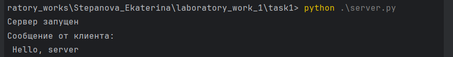
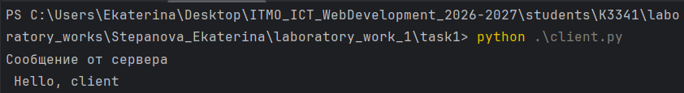
Практическое задание 2. Вычисления через TCP
TCP, в отличие от UDP, требует установления соединения перед обменом данными и гарантирует доставку и порядок байт. Дополнительные накладные расходы на установку соединения окупаются надёжностью: параметры, введённые пользователем на клиенте, дойдут до сервера, а результат вычисления — обратно. В Python для TCP используется socket.SOCK_STREAM вместе с методами connect() на клиенте и accept() на сервере.
Вариант операции выбирается по порядковому номеру студента в журнале (например, пятый студент получает вариант 1).
Мой порядковый номер в журнале 29 -> тема 4. Теорема Пифагора
Задание
Реализовать клиентскую и серверную часть приложения. Клиент запрашивает выполнение математической операции, параметры которой вводятся с клавиатуры. Сервер обрабатывает данные и возвращает результат клиенту.
Требования:
- Обязательно использовать библиотеку socket.
- Реализовать с помощью протокола TCP.
Реализация
Клиент вводит катеты a и b, отправляет их серверу по tcp, сервер вычисляет гипотенузу и возвращает результат.
В Python для создания TCP-сокета используется:
socket.SOCK_STREAM
На стороне клиента для подключения к серверу используется метод:
connect()
На стороне сервера используются методы:
bind()
listen()
accept()
Код сервера
Код
import socket
server_sock = socket.socket(socket.AF_INET, socket.SOCK_STREAM) # говорим, что это tcp-сервер
def pythagorean_theorem(data):
a, b = map(float, data.split())
c = (a ** 2 + b ** 2) ** 0.5
return c
server_sock.bind(('', 8080)) # порт 8080 на всех доступных интерфейсах
server_sock.listen(1)
while True:
conn, addr = server_sock.accept()
print(f"{addr} is connected")
# считываем данные клиента
data = conn.recv(1024)
print(f"Полученные данные от пользователя: {data.decode('utf-8')}")
if not data:
break
conn.send(str(pythagorean_theorem(data)).encode('utf-8'))
print('Сервер останавливается')
conn.close()
Код клиента
Код
import socket
client_sock = socket.socket(socket.AF_INET, socket.SOCK_STREAM)
client_sock.connect(('localhost', 8080))
inp = input("Введите величины катов a и b через пробел: ")
client_sock.send(inp.encode('utf-8'))
data = client_sock.recv(1024)
print(f"Ответ от сервера: c = {data.decode('utf-8')}")
client_sock.close()
Запуск программы
Для выполнения программы необходимо открыть два терминала(для клиента и для сервера)
В первом терминале вводим:
python server.py
Во втором терминале:
python client.py
Выполнение
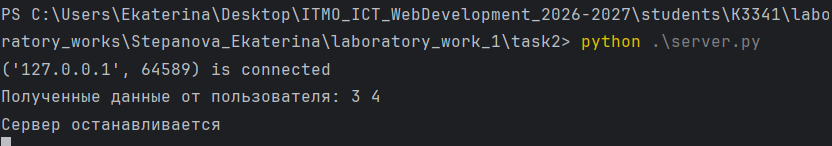
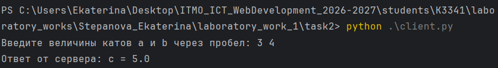
Практическое задание 3. Раздача HTML-страницы по HTTP
HTTP-ответ — обычный текст, оформленный по строгому формату: строка статуса, заголовки, пустая строка и тело. Серверу достаточно прочитать содержимое index.html, посчитать его длину для заголовка Content-Length и отправить всё одним пакетом через тот же сокет, что принял подключение.
Задание
Реализовать серверную часть приложения. Клиент подключается к серверу и в ответ получает HTTP-сообщение, содержащее HTML-страницу, которую сервер подгружает из файла index.html.
Требования:
- Обязательно использовать библиотеку socket.
Реализация
При выполнении я решила опираться на код из "Примеры реализации". В данном задании клиентом является веб-браузер. В данном задании клиентом выступает веб-браузер. Сервер принимает подключение от браузера и отправляет ему HTML-документ.
Код HTML-страницы
Код
<!DOCTYPE html>
<html>
<head>
<title>Itmo labs</title>
</head>
<body>
<h1>Лабораторная работа 1.</h1>
<h2>Практическое задание 3. Раздача HTML-страницы по HTTP</h2>
<p>HTTP-ответ — обычный текст, оформленный по строгому формату: строка статуса, заголовки, пустая строка и тело. Серверу достаточно прочитать содержимое index.html, посчитать его длину для заголовка Content-Length и отправить всё одним пакетом через тот же сокет, что принял подключение.</p>
<p>Реализовать серверную часть приложения. Клиент подключается к серверу и в ответ получает HTTP-сообщение, содержащее HTML-страницу, которую сервер подгружает из файла index.html.</p>
</body>
</html>
Код сервера
Код
import socket
# Параметры сервера
HOST = 'localhost' # Адрес хоста (localhost для локальных соединений)
PORT = 9090 # Порт, на котором будет работать сервер
# Создаем сокет
server_socket = socket.socket(socket.AF_INET, socket.SOCK_STREAM)
# Привязываем сокет к адресу и порту
server_socket.bind((HOST, PORT))
# Начинаем слушать входящие соединения
server_socket.listen(5)
print(f"HTTP сервер запущен на {HOST}:{PORT}...")
while True:
# Принимаем соединение от клиента
client_connection, client_address = server_socket.accept()
with open("index.html", "rb") as f: # читаем в бинарном режиме
html_bytes = f.read()
# Формируем HTTP-ответ с заголовками и HTML-контентом
http_response = (
"HTTP/1.1 200 OK\r\n"
"Content-Type: text/html; charset=UTF-8\r\n"
f"Content-Length: {len(html_bytes)}\r\n"
"Connection: close\r\n"
"\r\n"
)
# Отправляем HTTP-ответ клиенту
client_connection.sendall(http_response.encode('utf-8') + html_bytes)
# Закрываем соединение
client_connection.close()
Структура HTTP-ответа
```
HTTP/1.1 200 OK
Content-Type: text/html; charset=UTF-8
Content-Length: ...
Connection: close
HTML-содержимое страницы
```
-
Первая строка содержит статус ответа. 200 OK означает, что запрос был успешно обработан.
-
Заголовок Content-Type сообщает браузеру, что сервер отправляет HTML-документ в кодировке UTF-8.
-
Content-Length содержит размер HTML-документа в байтах.
- Connection: close сообщает, что после отправки ответа соединение будет закрыто.
- Пустая строка между заголовками и HTML-кодом обязательна для разделения заголовков и тела HTTP-ответа.
Запуск программы
Для выполнения программы необходимо открыть два терминал для сервера. В терминале вводим:
python server.py
После запуска сервера в терминале появится сообщение:
HTTP сервер запущен на localhost:9090...
После этого необходимо открыть браузер и перейти по адресу:
http://localhost:9090
Выполнение
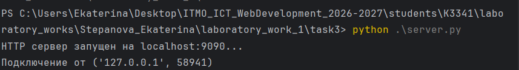
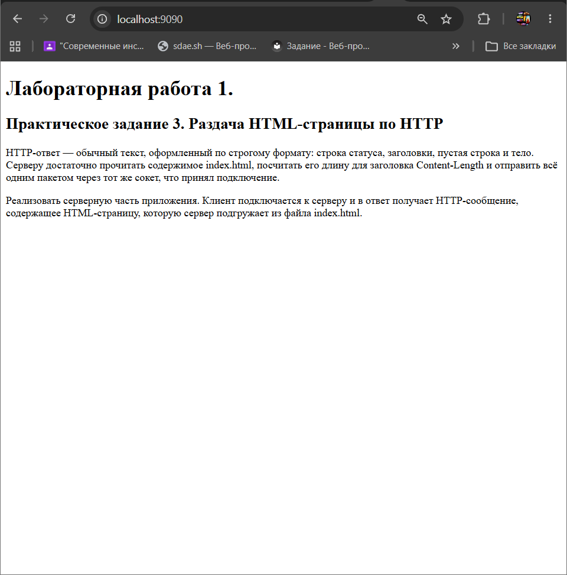
Практическое задание 4. Чат на сокетах
Чат отличается от предыдущих заданий тем, что сервер обслуживает не одного клиента, а нескольких одновременно. Для TCP это значит — держать список активных подключений и рассылать входящие сообщения всем, кроме отправителя, а для каждого соединения удобно завести отдельный поток. UDP не требует держать соединение открытым, но для параллельного приёма и отправки на клиенте всё равно нужен threading.
Задание
Реализовать двухпользовательский или многопользовательский чат. Для максимального количества баллов реализуйте многопользовательский чат.
Требования:
- Обязательно использовать библиотеку socket.
- Для многопользовательского чата необходимо использовать библиотеку threading.
- Должна быть возможность идентифицировать пользователей.
-
Пользователь должен иметь возможность выйти из чата.
-
Реализация:
-
Протокол TCP — 100% баллов.
- Протокол UDP — 80% баллов. Для UDP используйте threading для получения сообщений на клиенте. Для TCP запустите обработку подключений и сообщений от всех пользователей в потоках. Не забудьте сохранять пользователей, чтобы отправлять им сообщения.
Реализация
Я реализовала два варианта и tcp и udp. Подробнее рассматривать будем вариант c tcp, так как сама логикка работы чата одинакова.
Сервер хранит подключенных пользователей в словаре, где каждому соединению соответствует имя пользователя. Для каждого клиента создается отдельный поток, благодаря чему несколько пользователей могут одновременно отправлять и получать сообщения.
Код tcp-сервера
Код
import socket
import threading
tcp_server_sock = socket.socket(socket.AF_INET, socket.SOCK_STREAM)
# привяжем сокет к адресу и порту
tcp_server_sock.bind(("localhost", 8080))
tcp_server_sock.listen()
print("Сервер запущен.....")
# словарь, где сервер будет хранить пользователей: соединение -> имя
users = {}
def broadcast(message, conn):
for user_conn in list(users.keys()):
if user_conn != conn:
user_conn.send(message.encode())
def handle_client(conn):
# первое сообщение от клиента - его имя
users[conn] = conn.recv(1024).decode()
message = f"Пользователь {users[conn]} присоединился к чату"
broadcast(message, conn)
print(message)
while True:
data = conn.recv(1024)
# пустые данные значит клиент закрыл соединение, '/exit' значит вышел сам
if not data or data.decode() == '/exit':
message = f'Пользователь {users[conn]} покинул чат'
broadcast(message, conn)
print(message)
del users[conn]
conn.close()
break
message = f"({users[conn]}): {data.decode()}"
broadcast(message, conn)
print(message)
while True:
# ожидание новых подключений
conn, addr = tcp_server_sock.accept()
# для каждого клиента отдельный поток
thread = threading.Thread(target=handle_client, args=(conn,), daemon=True)
thread.start()
Код tcp-клиента
Код
import socket
import threading
SERVER_ADDR = ("localhost", 8080)
tcp_client_sock = socket.socket(socket.AF_INET, socket.SOCK_STREAM)
tcp_client_sock.connect(SERVER_ADDR)
# узнать имя пользователя
username = input("Введите свое имя: ")
tcp_client_sock.send(username.encode())
def receive_message():
while True:
data = tcp_client_sock.recv(1024)
if not data:
break
print(data.decode())
thread = threading.Thread(target=receive_message, daemon=True)
thread.start()
# daemon=True Этот поток является вспомогательным. Когда основная программа закончится, его тоже можно завершить
while True:
message = input()
if message.strip() == '/exit':
tcp_client_sock.send('/exit'.encode())
print("Вы вышли из чата!")
tcp_client_sock.close()
break
else:
tcp_client_sock.send(message.encode())
Что происходит?
- Запускается сервер и начинает ожидать подключения.
- Клиент подключается к серверу и вводит свое имя.
- Сервер сохраняет имя и соединение пользователя.
- Для каждого клиента создается отдельный поток.
- Клиенты могут одновременно отправлять сообщения.
- Сервер пересылает сообщение всем пользователям, кроме отправителя.
- При вводе /exit пользователь выходит из чата.
- Сервер удаляет пользователя из списка подключенных.
Запуск программы
Обязательно! Сначала запускаем сервер:
python server.py
Затем необходимо открыть несколько терминалов и в каждом запустить один и тот же клиент:
python client.py
После запуска каждый пользователь вводит свое имя и может обмениваться сообщениями с другими участниками.
Выполнение
Давайте запустим сервер и создадим трех пользователей(Алеша Попович, Добрыня Никитич, Тугарин Змей)
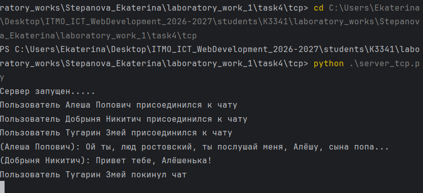
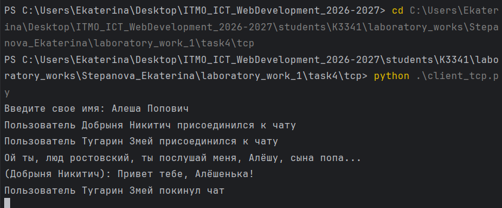
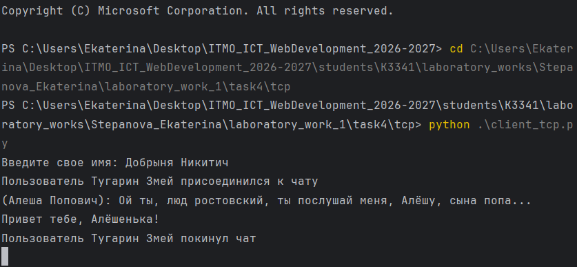
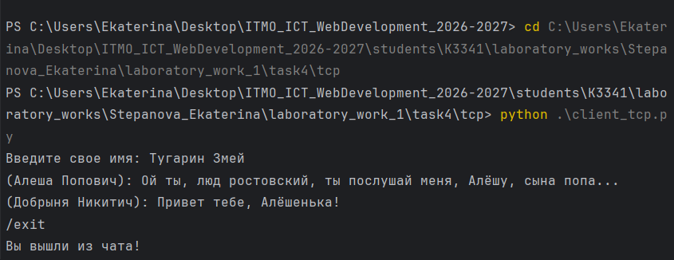
Практическое задание 5. Простой веб-сервер (GET/POST)
В данном задании необходимо реализовать простой HTTP-сервер, который принимает GET и POST-запросы. Сервер хранит оценки, группируя их по дисциплинам, и отображает журнал в виде HTML-страницы.
Задание
Реализовать веб-сервер с использованием библиотеки socket, который:
- принимает информацию о дисциплине и оценке;
- сохраняет оценки в памяти;
- группирует оценки по названию дисциплины;
- отображает все оценки в виде HTML-страницы;
- обрабатывает HTTP-запросы
GETиPOST.
Реализация
Для хранения оценок используется словарь grades, где ключом является название дисциплины, а значением — список оценок.
Например:
{
"Математика": [4, 5, 5],
"Программирование": [5, 4]
}
Сервер самостоятельно разбирает HTTP-запрос: определяет метод, путь, заголовки и тело запроса.
Код сервера
Код
# базовый класс для написания http-сервера
import socket
from urllib.parse import parse_qs, urlparse
import sys
class MyHTTPServer:
# Параметры сервера
def __init__(self, host, port, name):
self.host = host
self.port = port
self.name = name
self.grades = {}
def serve_forever(self):
# 1. Запуск сервера на сокете, обработка входящих соединений
sock = socket.socket(socket.AF_INET, socket.SOCK_STREAM)
sock.bind((self.host, self.port))
sock.listen()
print(f"Сервер запущен на хост: {self.host} порт: {self.port} ")
while True:
conn, addr = sock.accept()
self.serve_client(conn)
conn.close()
def serve_client(self, conn):
# 2. Обработка клиентского подключения
file = conn.makefile("r", encoding="utf-8")
request = file.readline().strip()
if not request:
return
print(request)
method, path, params = self.parse_request(request)
headers = self.parse_headers(file)
print(method, path, '-------------------')
body = ""
if "content-length" in headers:
body = file.read(int(headers["content-length"]))
status, html = self.handle_request(method, body)
self.send_response(conn, status, html)
def parse_request(self, request_line):
method, url, version = request_line.split()
parsed = urlparse(url)
path = parsed.path
params = parse_qs(parsed.query)
return method, path, params
# 3. функция для обработки заголовка http+запроса. Python, сокет предоставляет возможность создать вокруг него некоторую обертку, которая предоставляет file object интерфейс. Это дайте возможность построчно обработать запрос. Заголовок всегда - первая строка. Первую строку нужно разбить на 3 элемента (метод + url + версия протокола). URL необходимо разбить на адрес и параметры (isu.ifmo.ru/pls/apex/f?p=2143 , где isu.ifmo.ru/pls/apex/f, а p=2143 - параметр p со значением 2143)
def parse_headers(self, file):
headers = {}
while True:
line = file.readline().strip()
if not line:
break
key, value = line.split(":", 1)
headers[key.strip().lower()] = value.strip()
return headers
# 4. Функция для обработки headers. Необходимо прочитать все заголовки после первой строки до появления пустой строки и сохранить их в массив.
def handle_request(self, method, body):
if method == "POST":
data = parse_qs(body)
subject = data.get("subject", [""])[0].strip()
grade = data.get("grade", [""])[0].strip()
if subject and grade.isdigit():
self.grades.setdefault(subject, []).append(int(grade))
print(self.grades)
return 200, self.render_page()
# 5. Функция для обработки url в соответствии с нужным методом. В случае данной работы, нужно будет создать набор условий, который обрабатывает GET или POST запрос. GET запрос должен возвращать данные. POST запрос должен записывать данные на основе переданных параметров.
def send_response(self, conn, status, body):
body_bytes = body.encode('utf-8')
head = (f"HTTP/1.1 {status} OK\r\n"
"Content-Type: text/html; charset=UTF-8\r\n"
f"Content-Length: {len(body_bytes)}\r\n"
"Connection: close\r\n"
"\r\n")
conn.sendall(head.encode("utf-8") + body_bytes)
def render_page(self):
grades_html = ""
for subject, marks in self.grades.items():
grades_html += f"<p>{subject}: {', '.join(str(m) for m in marks)}</p>"
return """<h1>Журнал оценок</h1>
<form method="post" action="/">
<input type="text" name="subject" placeholder="Дисциплина">
<input type="text" name="grade" placeholder="Оценка">
<button type="submit">Сохранить</button>
</form>
""" + grades_html
# 6. Функция для отправки ответа. Необходимо записать в соединение status line вида HTTP/1.1 <status_code> <reason>. Затем, построчно записать заголовки и пустую строку, обозначающую конец секции заголовков.
if __name__ == '__main__':
host = "localhost"
port = 8080
name = "-Gradebook-"
serv = MyHTTPServer(host, port, name)
try:
serv.serve_forever()
except KeyboardInterrupt:
pass
Что происходит?
- Запускается HTTP-сервер на localhost:8080.
- Сервер ожидает подключения от браузера.
- Сервер получает HTTP-запрос и определяет его метод.
- При POST сервер получает название дисциплины и оценку.
- Оценка добавляется в список соответствующего предмета.
- При GET сервер формирует HTML-страницу с журналом.
- Сервер отправляет браузеру HTTP-ответ.
- Браузер отображает форму и список сохраненных оценок.
Запуск программы
В терминале вводим:
python server.py
После запуска открываем в браузере:
http://localhost:8080
Выполнение
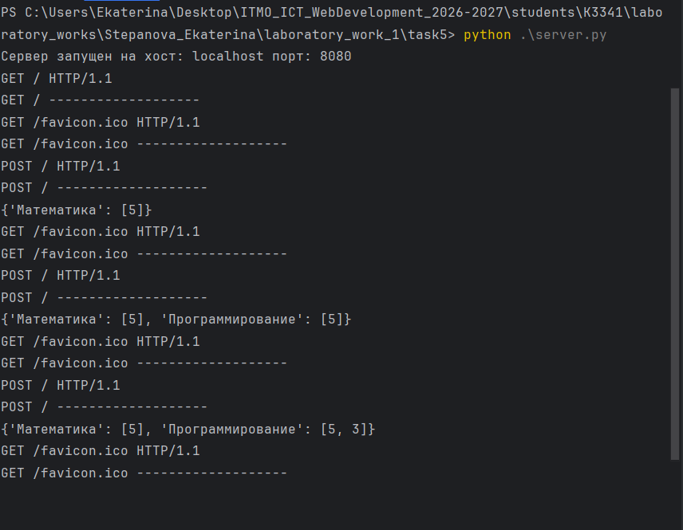
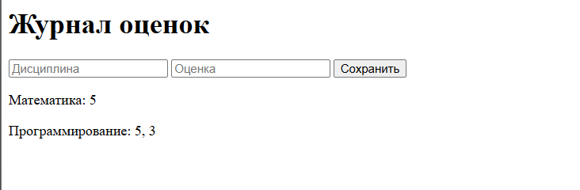